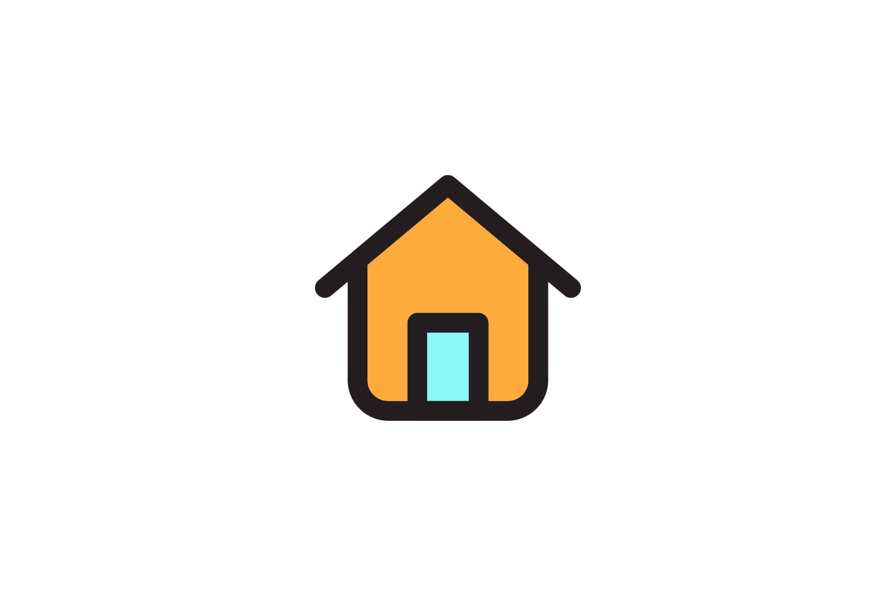

AN INTERVIEW WITH THEMIS
Q. What make you the happiest?
A.“Spending time with my friends and doing spontaneous things. Basically when I’m not doing class or working or thinking about assignments.”
Q. What make you the saddest?
A. “Hmm. Maybe knowing that all good things will eventually come to an end.”
Q. How would you describe you personality?
A. “Extroverted. I guess people often use astrological signs or the MBTI types to distinguish between personality types. I am a capricorn sun, cancer moon, libra rising, and my MBTI type is ENTP/J. If this makes no sense to you I am apparently a restless workaholic.”
Q. What do you do to de-stress?
A. “I like painting and sculpting a lot. I also like binge watching a good show or hate watching a shitty movie. Sometimes I bake, or I cook. From time to time I’ll take a walk. I used to shop a lot… and sometimes I still do but I’m trying to stop.”
Q. Whats the best sound in the world?
A. “When things click into place. It’s so satisfying.”
Q. Whats great about your mom?
A. “She’s not afraid to be who she is.”
Q. What are you ashamed of?
A. “Maybe not taking more risks. Sometimes I just like sticking to my routines.”
Q. How do you take your coffee?
A. “Black. Sometimes I do like a latte or Frappuccino, or maybe even a cold brew.”
Q. How do you define beauty?
A. “I think the more I experience and see the harder this becomes. As corny as this is I think beauty is so subjective, but if I had to define it I would say that beauty is the good energy in someone.”
Q.If you could change one thing about your face, what would it be?
A. “Clear skin and I’ve always wanted a nose job… so maybe that.”
Jessie Kil
